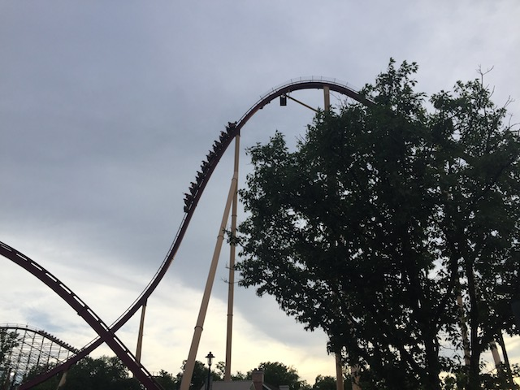

| |
Diamondback Review

We're here at Kings Island. Today's ride we'll be reviewing for you is Diamondback. This is the parks B&M Hyper Coaster, and I have to admit. This is one of the better ones. OK, it's not as good as Goliath @ SFOG, but it's still really good and one of the better Hyper Coasters that B&M has made. You then get in the car and pull down the clamshell lap bar. Now clamshells are awesome as you have a lot of freedom. But trust me. They keep you in. You then begin to climb the lifthill. Higher and Higher you go. The view is primarily just of trees. But you also get some good views of Vortex, Beast, and Mystic Timbers. But none of that really matters. We reach the top, and now the actual ride is about to begin. We head down the first drop. We not only gain a lot of speed, but also a lot of airtime. Seriously, you just are out of your seat for the entire drop. So that makes it really fun. The ride then continues and takes us up over a giant hill. We lose some speed, but also gain a lot of floater air. Seriously, if you are a big fan of Floater Air, then you are going to absolutely love Diamondback. I'm not huge for floater air, and prefer ejector air, but I'm really enjoying this. At the bottom of this hill, there's a bit of a curve. But there's no laterals. Sadly, nope. Oh well. The pattern continues, as we go over a giant airtime hill, get a lot of good floater air, and drop right back down to the ground. We then twist into a hammerhead. Well, I don't think it's a hammerhead here. I think it's just a high banked turnaround here. But either way, it's still pretty fun. Though I will admit that the laterals here are weak. Laterals are not the strong point of Diamondback. We head over another airtime hill. Unfortunetly for us, we encounter a trim brake. BOO!!! Well, at least it's pretty weak. We then head into an upward helix. OK, While Diamondback is very similar to Nitro, the one thing that gives the slight edge to Nitro is the strong upward helix on Nitro. There, it's full of force and agressive. Here...not so much. Again, laterals are not Diamondbacks strength. This leads us into the midcourse brakes. Yeah. This takes away a bit of speed, and sadly, the 2nd half isn't nearly as good as the first half. Oh well. We drop back down, gain some more speed, and head over a small airtime hill. It's fun, but the floater air here honestly isn't as strong as the hills right after the first drop. We go through another airtime hill. Some good floater air is here. But again, not great. We go up into another helix, and once again. Say it with me folks. Laterals are not Diamondback's strength. So yeah. This isn't a very intense helix. We then head down a small little drop, which gives us a nice little pop of airtime. We then go through some awkward straight track. But this actually has a purpose. You see, Diamondback actually has a splashdown. It doesn't really make much sense on the ride. But for some reason, Diamondback basically said "Why is it that only Dive Machines get the Splashdown fun!? F*ck it! I'm getting my own splashdown!" Well, at least it makes it photogenially unique among the B&M Hypers. Unfortunetly, splashdowns generically signal the end of the ride. And yeah. Diamondback is a cool B&M Hyper. Definetly one of the better ones. But in a way, it kind of frustrates me. The first half is one of the best among B&M Hypers. Seriously, that floater air is super good. But the 2nd half just sort of fizzles out. It's still really good, but it could've been one of the best. Oh well. It's still a great B&M Hyper that I totally recommend when visiting Kings Island.
9/10
Location: Kings Island
Opened: 2009
Built by: B&M
Last Ridden: June 28, 2018
Diamondback Photos





Home
|